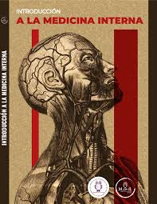
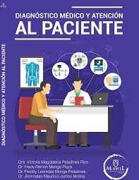
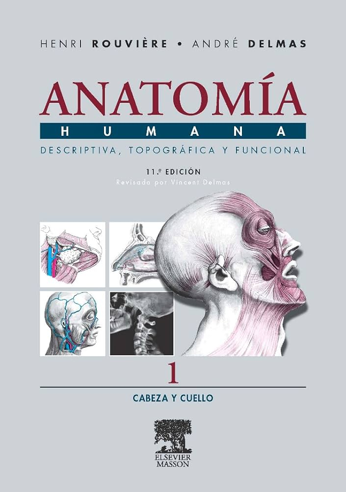

Medicina
Introducción a la Medicina Interna
Autor: Tannia Jacqueline Fiallos Mayorga, Diana Lorena Pedrosa Astudillo

Medicina
Diagnóstico Médico y Atención al Paciente
Autor: Victoria Magdalena Paladines Rios, Fredy Ramón Monge Plaza, Freddy Leonidas Monge Paladines

Medicina
Anatomía Humana I. Morfología general y miembros
Autor: Dra. Cristina Verástegui Escolano, Dr. José Fernández Vivero
